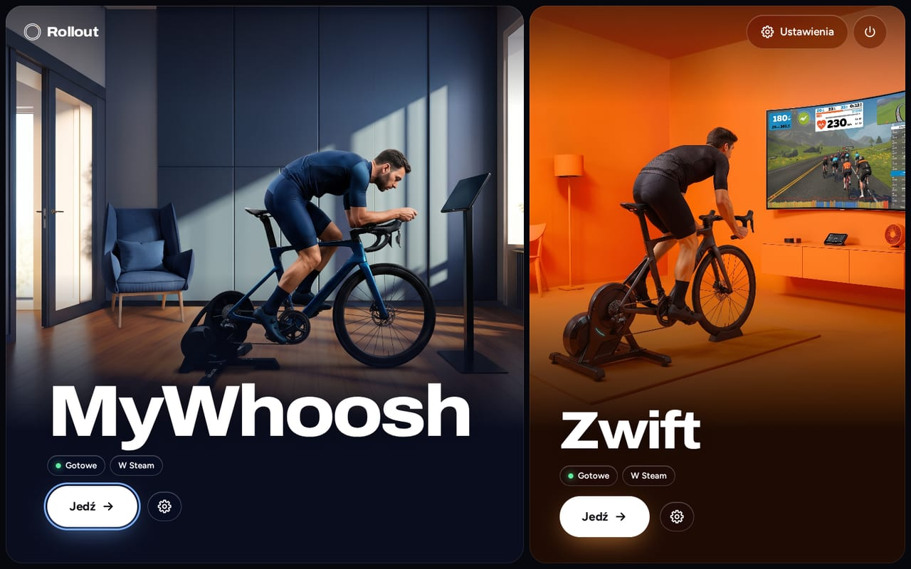
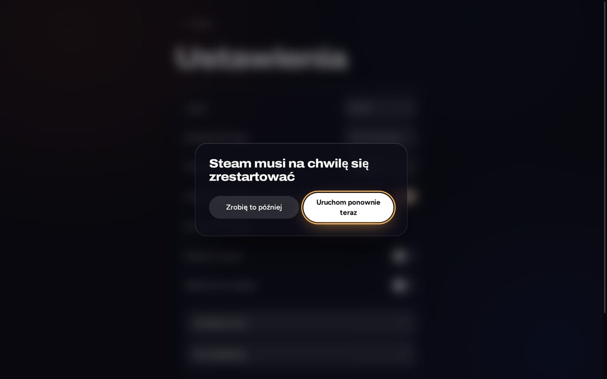

MyWhoosh
Bezpośredni Bluetooth- Trenażer i pas na tętno przez Bluetooth, sparowane w grze jak w Windows
- Działa z GE-Proton, pobranym i sprawdzonym dla Ciebie
Rollout instaluje, aktualizuje i uruchamia Twoje aplikacje do jazdy na trenażerze. Pobierz, kliknij dwukrotnie, jedź, wszystko z kontrolera.
Beta: przetestowano na ROG Ally z Bazzite. Steam Deck jeszcze niesprawdzony.

Każda aplikacja dostaje konfigurację, która najlepiej działa na Linuksie. Rollout wybiera ją za Ciebie.
Każdy ekran działa z kontrolerem, dotykiem i klawiaturą. Menu i listy są własne w Rollout, więc działają w Trybie gry, gdzie natywne okna zawodzą.
Bez obowiązkowych pytań, bez terminala, bez sudo. Rollout pokazuje z góry rozmiar i czas, potem czytelne etapy z postępem.
Rollout może aktualizować się sam w tle. Każda aktualizacja launchera jest podpisana i uruchamiana próbnie; jeśli się nie uda, Rollout sam wraca do ostatniej dobrej wersji.
Jeden przełącznik dodaje Rollout i Twoje aplikacje do Steam, z grafikami. Zaczynaj jazdy prosto z Trybu gry; czas gry zostaje po aktualizacjach.

W MyWhoosh sprawdzenie Bluetooth pokazuje, które trenażery i pasy na tętno nadają, zanim wepniesz buty, i restartuje zawieszony adapter.
Gdy coś pójdzie źle, Rollout prostymi słowami mówi, co zrobić dalej, z jednym przyciskiem, by spróbować ponownie. Szczegóły tylko, jeśli ich chcesz.
Za „Zaawansowane”: wersja Proton, wyjście grafiki, adapter Bluetooth, kanał aktualizacji, logi i diagnostyka. Każda opcja pokazuje zalecaną wartość.
Wybierz system, pobierz Rollout i otwórz go w Trybie pulpitu. Terminal nie jest potrzebny.
Beta: przetestowano na ROG Ally z Bazzite. Steam Deck jeszcze niesprawdzony.
Pobieranie wkrótce.
Zwift potrzebuje dodatkowo Podmana lub Dockera, których SteamOS zwykle nie ma. MyWhoosh nie potrzebuje żadnego z nich.
Pobieranie wkrótce.
Podman jest w zestawie, a Zwift go potrzebuje. Bazzite z GNOME: pobrane pliki .desktop nie uruchamiają się tam dwukrotnym kliknięciem, więc ta instalacja nie działa jeszcze w tej edycji. Użyj edycji z KDE.
Inne dystrybucje Linuksa: bez wsparcia, na własne ryzyko. Zobacz GitHub.
Rollout nie modyfikuje gier. Steruje otwartymi projektami, które już wykonują ciężką pracę.
Skrypty projektów są przypięte do dokładnego commitu i sprawdzane sumą SHA-256. Aktualizacje launchera są podpisane Ed25519.
Rollout mieszka w ~/.local/share/rollout. Instalacja nie wymaga roota i nie zmienia pakietów systemowych w SteamOS ani Bazzite.
Zwift nie ma bezpośredniego Bluetooth w kontenerze, a żadna z gier nie jest oficjalnie wspierana na Linuksie. Rollout mówi o tym, zamiast to ukrywać.
Na Bazzite tak: Zwift działa w kontenerze opartym na netbrain/zwift, który Rollout instaluje i uruchamia. Rollout przetestowano na ROG Ally z Bazzite; Steam Deck nie został jeszcze sprawdzony. Na SteamOS zwykle najpierw brakuje Podmana lub Dockera. Czujniki łączą się przez Zwift Companion na telefonie lub Direct Connect, nie bezpośrednio przez Bluetooth.
Tak. MyWhoosh działa z GE-Proton i rozmawia bezpośrednio przez Bluetooth z trenażerem i pasem na tętno. Parujesz je w grze, jak w Windows.
Tak, w Bazzite. Zainstaluj Rollout w Trybie pulpitu, a potem uruchom Zwift z Rollout lub ze Steam w Trybie gry. Kontroler steruje grą.
Nie. Pobierz Rollout.desktop, kliknij go dwukrotnie w Trybie pulpitu i potwierdź jeden raz. Potem Rollout pojawi się w menu aplikacji.
Tak. Rollout działa z kontrolerem, dotykiem i klawiaturą. W Trybie gry kontroler steruje też Zwiftem.
Rollout w tle szuka nowych wersji i instaluje je automatycznie, jeśli chcesz. Aktualizacje launchera są podpisane, a uszkodzona aktualizacja cofa się sama.
Nie. Rollout to niezależny projekt, niepowiązany z Zwift, Inc., MyWhoosh ani Valve. Ich warunki ograniczają niezatwierdzone narzędzia firm trzecich, a konta mogą zawiesić według własnego uznania. Przeczytaj warunki i zdecyduj sam.
Rollout jest w becie. Przetestowano go na ROG Ally z Bazzite. SteamOS na Steam Deck to drugi cel, ale jeszcze niesprawdzony. Inne dystrybucje Linuksa na własne ryzyko.